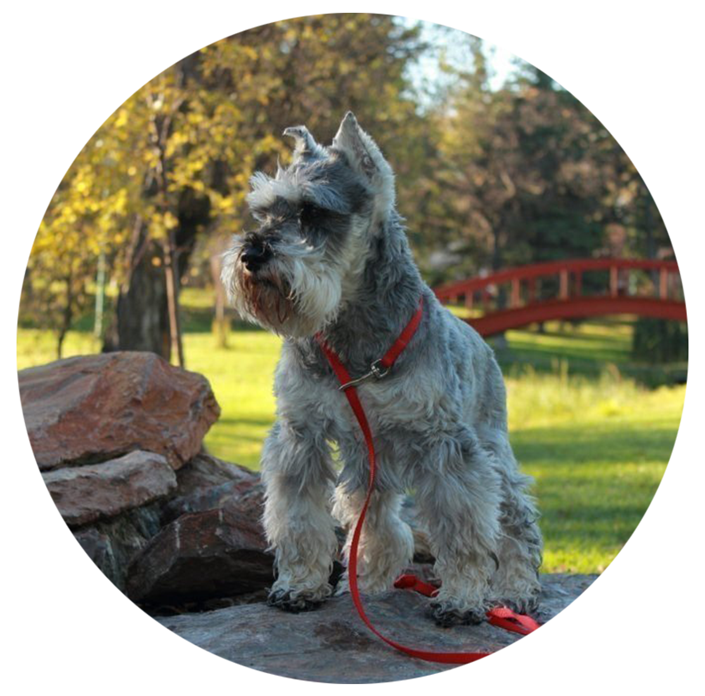

Цвергшнауцер
ЦВЕРГШНАУЦЕР (нем. Zwergschnauzer, англ. Miniature Schnauzer), порода служебных собак. Другое название - карликовый, или миниатюрный шнауцер. Цвергшнауцер выведен в Германии путем отбора миттельшнауцеров и скрещиванием с аффенпинчером и другими миниатюрными пинчерами. Есть мнение, что это могли быть и карликовый шпиц или фокстерьер. Порода разводится в Германии с 19 века, а в 1928 году была завезена в Великобританию, в настоящее время цвергшнауцер популярен во всем мире. Призвание карликового шнауцера - ловля крыс, у него тонкое чутье и мгновенная реакция.
Это уменьшенная копия миттельшнауцера, разница в росте - 10 см. Собака крепкого сложения, сильная, мускулистая, квадратного формата. Высота в холке 30,5-35,5 см, вес 6-7 кг. Голова вытянутая, переход от лба к морде ярко выражен. Морда плотная, с сильными челюстями. Грудь не очень широкая, спина сильная, бедра мускулистые. Уши висячие, приподнятые на хрящах, направлены вперед. В Великобритании принято оставлять в естественном виде, в США - купируют. Хвост высоко посажен, приподнят вверх, купируют, оставляя 3 позвонка. Шерсть грубая, на голове (брови, усы, борода) и ногах развита более длинная, пышная шерсть. Окрас: чисто черный или серебристо-черный, "перец с солью". Это смышленая, общительная собака, доброжелателен с детьми. Ни агрессивность, ни пугливость ему не свойственны, но на каждый подозрительный звук он будет откликаться заливистым лаем. Обладает хорошим здоровьем и является долгожителем. Уход за шерстью требует внимания - раз в неделю вычесывать щеткой и два раза в год необходим тримминг.
Характер
Как и все представители группы шнауцеров цвергшнауцер — бдительная и подвижная собака, в то же время легко подчиняющаяся командам. Он не очень дружелюбен к чужим людям, но умён и всегда готов быть полезным. Не агрессивен и не робок. Недоверчиво относится к посторонним, всегда начеку.
Вес и рост взрослых
Высота в холке 30,5-35,5 см.
Вес 6-7 кг.
Здоровье и возможные проблемы со здоровьем
Склонен к болезням печени, камней в почках, сахарному диабету, кожным заболеваниям, болезни Виллебранда и кистам. Могут возникнуть наследственные глазные проблемы. Легко набирает вес, не стоит перекармливать.
Условия содержания
Собака может содержаться как в городских так и загородных условиях.
Тренировки
Это достаточно энергичная порода собак, поэтому ей нужно давать возможность вдоволь выгуляться.
Продолжительность жизни
Около 15 лет.
Уход за шерстью
Шерсть шнауцера, как и всех жесткошёрстных пород, требует специальной обработки. Два раза в год, когда начинается линька, проводят выщипывание мертвых волос —тримминг. Мягкие части, голову и уши, кожу шеи, обрабатывают специальными ножницами, чтобы не причинить боль. При правильном уходе в квартире, где живет шнауцер, практически не бывает шерсти.